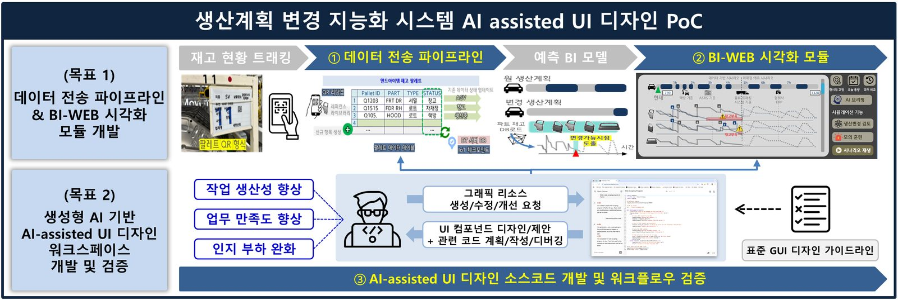

[Completed] 생산계획 변경 지능화 시스템 AI-assisted UI 디자인 PoC
연구책임자 / 2025.06.01 ~ 2026.01.31 / 주식회사 현대자동차 (KRW 51 million)
생산계획 변경 지능화 시스템 AI-assisted UI 디자인 PoC (PoC Study on AI-Assisted UI Design for Intelligent Production Planning Systems)기간: 2025.06. ~ 2026.01.
Funding: Hyundai Motor Company (KRW 51 million)
본 연구는 두 가지 목표를 가지고 있습니다. 첫째, 공장 재고 관리 전산화 및 차체 로트 생산 계획 변경을 위한 물류 트래킹을 목표로, 제조솔루션본부 지능화 시스템의 데이터 전송 파이프라인 & BI-WEB 시각화 모듈 을 개발합니다. 둘째, UI 디자인 및 개발 프로세스의 효율화를 위해 생성형 AI 기반 AI-assisted UI 디자인 워크스페이스 를 새롭게 개발 및 검증하였습니다.
English Summary:
This study aims to: 1) develop a data transmission pipeline and BI-WEB visualization module for the intelligent system of the Manufacturing Solutions Division, targeting stocks tracking for factory inventory management digitalization and vehicle body lot production plan changes; and 2) develop and validate an AI-assisted UI design workspace to streamline the UI design and development process.
